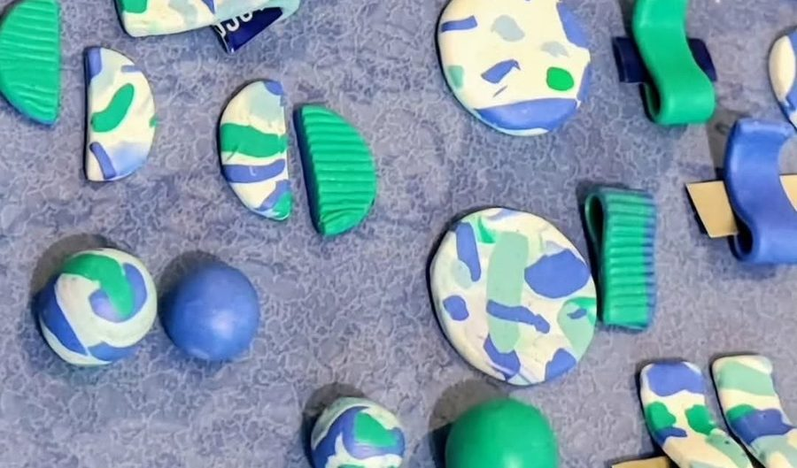
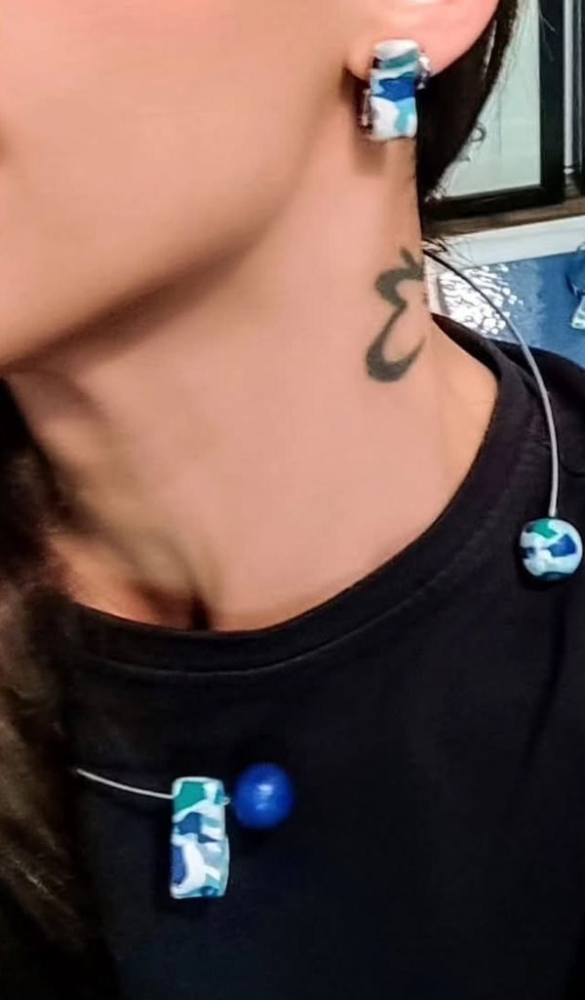

Gioielli che seguono il tuo ritmo.
Pezzi in argilla polimerica, fatti a mano uno per uno, per una quotidianità ricercata. Una coccola speciale da fare a te stessa, nei giorni lenti e in quelli più intensi.
Scopri i pezziIl vero lusso, oggi, è sentirsi sé stesse.
Non solo un gioiello, ma una storia da indossare: superfici rigate, pieghe morbide, forme che sembrano tessuto. Pensati per accompagnarti ogni giorno, senza dover scegliere tra bellezza e praticità.
Unico, davvero
Ogni pezzo è diverso e irripetibile. Le piccole variazioni sono il segno della mano che lo ha fatto.
Per ogni momento
Dal look casual a quello più ricercato, si adatta con naturalezza, in equilibrio tra estetica e funzionalità.
Slow fashion
Non si accumula: si costruisce uno stile coerente e duraturo, un pezzo alla volta.
Scegli il tuo.
Ogni gioiello è fatto a mano, uno per uno: forme e sfumature possono variare leggermente. Tocca un pezzo per vederlo da vicino.
Per acquistare un pezzo scrivici via email o su Instagram: ti rispondiamo con disponibilità e modalità di consegna.
A mano, un passo alla volta.
Forma
Ogni pezzo è modellato a mano nell'argilla polimerica: onde, nastri, dischi, superfici rigate.
Cottura
Finché non va in forno il pezzo è ancora morbido: è la cottura a fissare la sua forma definitiva.
Montaggio
Ogni pezzo viene montato a mano, pronto da indossare ogni giorno.


Un pezzo pensato per te.
Se cerchi un gioiello che dialoghi con ciò che già possiedi, un vestito che ami, una palette che ti rappresenta, possiamo progettarlo insieme. Scrivici e raccontaci la tua idea.
Nelle foto, due lavori su richiesta: i colori scelti insieme, ancora prima della cottura, e orecchini coordinati al girocollo.
ScriviciSeguici su Instagram.
I pezzi nuovi, i lavori su richiesta e quello che succede al banco, prima di arrivare qui.
Ti piace un pezzo?
Scrivici per sapere se è disponibile, per vederlo da vicino o per un'idea tutta tua.